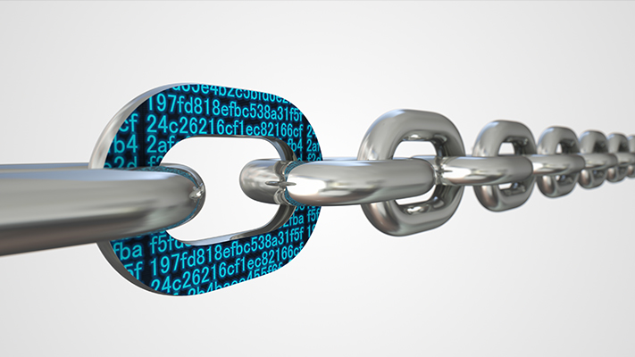

블록체인의 기초 개념 4가지

탈중앙화된 기술
디지털키 변경
변조 불가능
미아닝
- 탈중앙화된 기술
거래 장부가 단일 중앙 서버에 저장되는 것이 아니라 다수의 컴퓨터에 분산되어 저장된다는 뜻입니다.
각 컴퓨터마다 고유의 거래 장부를 갖고 있으며, 장부에 거래가 추가되거나,
체인에 블록이 추가될 때마다 네트워크 안에 있는 모든 컴퓨터가 거래를 검증하고 이를 동기화해서 각각의 장부를 일치시킵니다.
이러한 탈중앙화와 동기화로 인해 단일 주체가 데이터를 관리할 필요가 없습니다.
- 디지털키 변경
블록체인에 거래를 추가하려는 각 참여자마다 컴퓨터가 메시지를 암호화하고 해독하는 데 사용하는 비밀 값인 디지털 키(key)를 갖고 있습니다.
이는 총 두 개의 키로, 하나는 자산의 소유권을 갖고 있는 당사자만 블록체인에 거래를 추가할 수 있도록 보장하는 키이며,
다른 하나는 네트워크 참여자들에게 거래가 참인지 거짓인지 입증해주는 키입니다.
이를 통해 블록체인은 네트워크 안에서 서로를 모르는 유저들끼리의 거래를 가능케 합니다.
- 변조 불가능
블록체인은 해싱(hashing)을 이용해서 데이터를 임의의 문자로 압축합니다.
데이터의 일부만 조작하더라도 원본 데이터와는 완전히 다른 해시가 생성되기 때문에 잘못됨을 바로 알아차릴 수 있습니다.
블록체인에서는 신규 블록이 추가될 때마다 해시를 서로 연결하는데,
만약 해커가 과거 거래 정보를 조작하면 해당 해시가 체인의 연결을 끊어버리기 때문에 위·변조가 불가능합니다.
- 미아닝
마이닝은 신규 블록을 체인에 추가하고 거래가 참인지 거짓인지 확인하는 과정입니다.
블록체인 네트워크에서 복수의 당사자가 거래를 발표하면, 네트워크의 컴퓨터들은 해당 거래에 기반을 둔 복잡한 수학 퍼즐을 가장 먼저 풀기 위해서 경쟁합니다.
또한 퍼즐을 가장 먼저 푼 컴퓨터는 이를 네트워크에 공유하고, 네트워크의 다른 컴퓨터가 해당 거래의 자산이 이미 사용되지 않았는지를 검증하며
이 거래가 테스트를 통과하면 거래 장부는 체인에 영구적으로 보관됩니다.
1
2
3